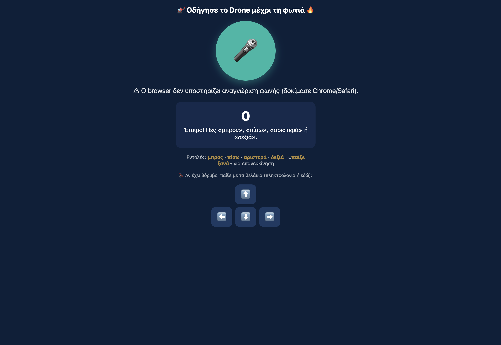
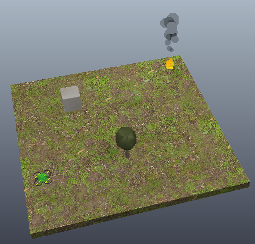

Coppelia Drone
«Οδήγησε το Drone μέχρι τη φωτιά» — teaching reinforcement learning by trial, error, and reward.
1 About
A two-part interface built around a single goal: fly a simulated drone on top of a fire. The control panel offers two ways to fly — Greek voice commands ("μπρος", "πίσω", "αριστερά", "δεξιά") recognized live in the browser, or the traditional arrow keys — while the CoppeliaSim environment shows the immediate effect of every move. Too many moves and the reward drops too low to recover; hit an obstacle and the run fails; reach the fire and the episode ends in a win, ready to restart. The point isn't just flying a drone — it's making visible, one attempt at a time, how reinforcement learning actually learns: fail repeatedly, track the reward each time, and keep going until it consistently reaches the target.
2 Preview
The control interface (voice or arrow-key input, live move counter) alongside the CoppeliaSim scene the drone is actually flying in.


3 Play
Opens the interactive simulation in a new tab.